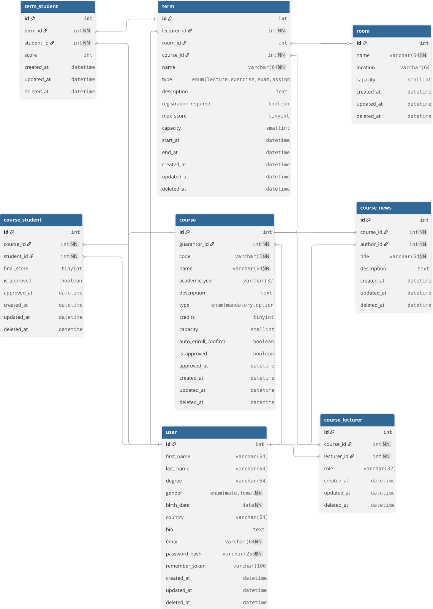

| Login | Heslo | Rola |
|---|---|---|
| systemadministrator@gmail.com | admin12345 | Administrátor |
| guarantordefault@gmail.com | guarantor12345 | Garant |
| lecturerdefault@gmail.com | lecturer12345 | Lektor |
| defaultstudent@gmail.com | student12345 | Študent |
| anna.kovacova@student.example | studentpass1 | Študent |
| marek.novak@student.example | studentpass2 | Študent |
| lucia.horvathova@student.example | studentpass3 | Študent |
| peter.svec@student.example | studentpass4 | Študent |
| zuzana.mikova@student.example | studentpass5 | Študent |
| tomas.varga@student.example | studentpass6 | Študent |
| petra.kralova@student.example | studentpass7 | Študent |
| defaultuser@gmail.com | user12345 | User |
Projekt je implementovaný v jazyku PHP s použitím frameworku Laravel a knižnice spatie/permission.
Na vývoj užívateľského grafického rozhrania bola využitá knižnica Flowbite využívajúca Tailwind.
Implementácia projektu je rozdelená do modulov:
Controllers
AuthController.php - Zakladná autentifikácia užívateľov (registrácia, prihlásenie, odhlásenie)Views
card/index.php - komponenta kartylayouts/master.blade - layout pre registráciu a loginforms/login.blade.php - formulár pre prihlásenieforms/register.blade.php - formulár pre registráciulogin.blade.php - zobrazenie stránky pre prihlásenie do ISregister.blade.php - zobrazenie stránky pre registráciu do ISV tomto module sa taktiež nachádza vytváranie rolí, ktoré sú definované v súbore RolesPermissions.php a pomocou seedera sa pridájú do datábazy (logiky).
Controllers
UserController.phpViews
index.blade.php - zobrazenie (odstraňovanie) užívateľovcreate.blade.php - vytvárenie užívateľashow.blade.php - zobrazenie užívateľaedit.blade.php - editácia užívateľaModels
User.phpControllers
CourseController.phpCourseNewsController.phpCourseStudentController.phpCourseLecturerController.phpMyCourseController.phpViews
course/ - vytváranie, zobrazovanie, editovanie, odstraňovanie kurzovcourse_news/ - vytváranie, zobrazovanie, editovanie noviniekcourse_students/ - pridávanie, zobrazovanie, odstraňovanie, hodnotenie študentovcourse_lecturer/ - pridávanie, zobrazovanie, odstraňovanie lektorov my_course/ - zobrazenie zapísaných kurzov s hodnotenímModels
Course.phpCourseNews.phpCourseStudent.phpCourseLecturer.phpControllers
TermController.phpRoomController.phpTermStudentController.phpTimeTableController.phpViews
term/ - vytváranie, zobrazovanie, editovanie a odstraňovanie termínovroom/ - vytváranie, zobrazovanie, editovanie a odstraňovanie miestností term_student/ - registrovanie, zobrazovanie, odstraňovanie, hodnotenie študentovtimetable/ - zobrazovanie rozvrhuModels
Term.phpRoom.phpTermStudent.php
Pre spustenie je potrebné mať nainštalovaný nástroj docker.
Programovací jazyk PHP vo verzii 8.1.
Potrebný je taktiež nástroj composer, príkazy pre inštaláciu:
php -r "copy('https://getcomposer.org/installer', 'composer-setup.php');"php composer-setup.php --install-dir=/usr/local/bin --filename=composerphp -r "unlink('composer-setup.php');"
composer require laravel/sail --devphp artisan sail:installchmod +x sail.sh./sail.sh up -d./sail.sh npm run devV novom okne terminálu spustíme príkazy pre inicializovanie datábazy:
./sail.sh php artisan migrate:fresh./sail.sh php artisan db:seedV prehliadači zadáme: http://localhost/